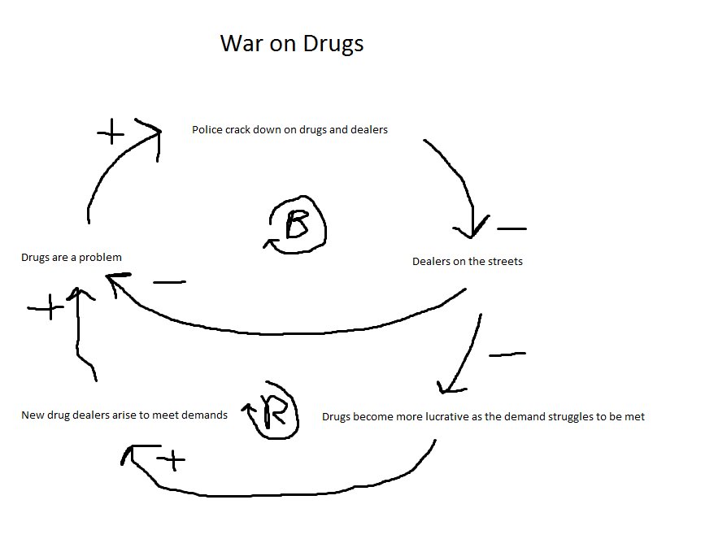

Introduction
I think this course is one which focuses on helping us get ready for the corporate world. Combined with COMP3500 and COMP3120, this seems like an incredibly important part of my degree from what I have seen so far. All of these courses focus on what will happen in the real world, why those things will happen and why those things will happen. This course in particular deals with the overarching systems point of view, basically how software fits into larger systems that have heaps of parts. Without knowing how these systems work, I think it is an unviable expectation to get a job ever in this field.
Course Introduction and Overview
Developing a software system to work with a greater system seem borderline impossible. I’m not really sure how they do it. The airport baggage handling system alone, while not seeming very complex looking at it like a normal person, looks insanely difficult to implement correctly when broken down into its parts and really looked at from a systems point of view. All of this is necessary though! People have to do it or society just will not work. It’s really great that we are learning about this because not only does it help appreciate the people that have already done it, but hopefully we can learn how to do it too. Without these giant systems of programs, hardware and sheer manpower working together, nothing would get done, we would still be in the Stone Age! Definitely not anywhere near what society is today, and that’s why this is so important.
Questions:
What do you hope to gain from taking this course?
Taking a direct quotation from the lecture slides, Sommerville says: Some students, especially those who are self-taught, do not appreciate the need for disciplined approaches to software development. Personally I have no idea how to handle or write software if I was looking to implement it in a large scale project. The connection between software, hardware and users is INTEGRAL in creating working systems and my goal is to really understand how it fits in.
Tell us about another system failure blamed on software, but in which other 'system' issues were contributing factors?
In 2010, National Australia Bank had a situation where most of their ATMs went offline for a while. This left thousands of people unable to access their money. It was caused when a corrupt file was uploaded into the overnight system, causing widespread errors and shutdowns. This was blamed on the software’s inability to handle such a file and therefore on the architecture itself. While this is true, it did seem to be a fault of the software, it was found out that a user had loaded the file incorrectly. Is it really the software’s fault entirely then? I don’t feel as though it can be solely blamed on software. If you put a fork in a toaster and were outraged that it broke, it’s not very fair.
Systems Thinking
I found this week really interesting, mainly because of Barry Newell’s presentation. The cause-effect loop was something that I had previously never heard of, but could seemingly be applied to many, if not all, systems. I feel as though I really understood the feedback loops he was presenting. This was because I think I did really well when he asked us to do generate one ourselves from a variety of topics. I was sitting next to a person who didn’t even take the course but was requested to be there by Dr Newell. Naturally, this of course meant that we had to present out diagram first. We chose to tackle the war on drugs as our topic and quickly came up with something we thought was a fix that failed and it looked something like this.
I was really happy with what we had done. I had always thought that the war on drugs was a good thing, but even after a short lecture, I was able to identify why it was actually causing more drugs to be on the streets just by looking at it in a systems thinking kind of way.
Questions:
Think about the ways in which systems thinking may interact with analytical thinking.
A systems thinking approach requires analytical thinking to be able to break things down the systems in the first place. I think you need to be an analytical thinker to even begin trying to be a systems thinker. Without analytical thinking, you may not be able to identify the hidden causes and effects of each system. Analyzing the byproducts and unexpected effects are 100% necessary to being a good systems thinker.
Tell us about a problem you have recently worked on. What kind of thinking did you use to solve the problem? If you didn't use systems thinking, could it have helped in understanding or solving the problem?
Recently I have been having many, many computer hardware and software issues. Blue screens left and right. Going with the simplest approach, I formatted my computer and started a fresh. Lo and behold the next day I was back to the blue screen of death, nothing had really changed except now I had to reinstall all of my stuff. Not really paying any attention to systems thinking at the time, as well as being a unknowledgeable of how computers really work, I thought that the best course of action was to simply reformat my computer… Again. Surprise, surprise, it didn’t fix the problem I was having.
After the panel that Dr Barry Newell gave, that night I sat down, got blue screened and was preparing to format my computer again. I realized at that point that maybe it was a fix that was failing. Not preparing to admit to myself that I had actually learnt something at the panel, I googled around for some more fixes that I could apply to my windows installation. I eventually found out that if it wasn’t those components breaking, it had to be something they were connected to in the system, which in this case turned out to be the motherboard. The issue was resolved shortly after, but only realized thanks to looking at the problem as a system, instead of individual components.
Why will systems thinking help you throughout the remainder of the course?
Systems thinking will help throughout the remainder of the course because it will really help us understand the way systems work to a level where we can identify why they might fail, what we need to do to fix them, and if our fix will actually work. Building on my example from last week, realizing beforehand that a user can push a corrupt file into a system and putting safeguards in to stop that could save loads of headaches and blame being pushed towards the software side of things.
The Engineering Context
This week we were taught all about engineers and their role in systems and systems thinking. The bottom line that can be taken away from this week’s content is that engineers are very important people. Engineers tackle many of the major problems that systems have and without them, systems would simple not work. Problems are special because without them, your system will actually work. If you go to any sort of university orientation day the one thing the engineering faculty will ask you is, “Do you like solving problems!?” to which you respond, “I guess so”. They will then go on about how Engineers absolutely love problems because that is exactly what their job is, solving them. They design solutions to fix problems and those designs are extremely important when creating a system as they have to line up with other engineer’s designs from multiple other disciplines.
Questions
'What it is to be an Engineer?' Have you ever thought about the responsibilities of an engineer and the impact they have on society?
Engineers are everything when it comes to the progression and improvement on society. They alone hold the keys to the future and their ideas, motives and educations are what eventually shape the world into what it will be, as well as what it is today. Engineers are effectively responsible for the solving of mankind’s greatest problems. When we needed a way to transport goods over the ocean, engineers designed and built boats. When there wasn’t an ocean they designed and built planes. When there wasn’t a way to bring fresh water to people that needed it, engineers found a way. They have designed and built our tallest buildings, our electricity management systems, all of our software and all of our plumbing. If you can imagine a world without all of those things, then you can imagine a world without engineers. That’s how important they are. They have the responsibility to push society into the future and make the world a better place for everyone.
Can you give an example of when you questioned, from an ethical perspective, something you were doing as part of a larger team?
Tough question as I haven’t really been a part of a large team that would take ethical problems into consideration. As I can’t really speak from experience, I will use a hypothetical, if it were my job to be part of developing software to be used in weapons of war, I feel as though I would definitely question my ethical standpoint. The effect on history that single engineering feats have had on the world can be un-questionably large (i.e. planes, electricity, sewage disposal etc.). Taking nuclear bombs for an extreme example, these weapons changed international relations forever. Being an engineer who worked on those would be difficult ethically unless you were borderline insane. They probably would have questioned if what they were doing was “ethical” right up until they died.
Design Thinking
From this week’s content, I think it’s fair to say that successful systems were designed at least in part by design thinkers. The best systems have been carefully researched for maximum usability and to encourage user uptake. Systems which simply get the job done are great, don’t get me wrong, but a system which not only gets the job done but suits the target audience will be even better. Finding and using patterns that you have found in peoples behaviors and needs by giving out surveys or examining them doing real life things will help the design be catered to the demographic you are looking at. You really want this system to feel like second nature to them or at least attract them with purely familiar parts and components. This maximizes the efficiency and most importantly the adoption of this new system.
It is also important for a well-designed system to be tested rigorously. Whether it is iterations upon iterations, prototypes upon prototypes or countless “final” versions, the design must be tried and true as a mistake could potentially affect thousands if not millions of people. All in all, design thinking is a brilliant way of creating systems for masses of people. It is integral in creating widely accepted systems, especially when early adoption is extremely important.
Questions
What is the relationship between systems thinking and design thinking?
System thinking and design thinking can be easily incorporated to solve much broader issues than simply creating a new piece of software that will work with some hardware. Issues like bringing fresh and clean water to underprivileged people can be a perfect example of this. You must use design thinking to first come up with something that fits the demographic you are creating for. To do this, you must consider the system that is best suited for the job based on your design.
Why not just put a huge water treatment plan there? That would get the job done!
Just because it does the job that the system needs, doesn’t mean that it is appropriate or the right tool for the job. Design thinking handles this part perfectly. Scoping out the area, the people and their skills are hugely important, which is an important step when coming up with a suitable design that will fit the system.
Systems Engineering
Before this week, when I heard ‘Systems Engineering’, I always thought of how systems were designed. Generally, I wasn’t too far off, but I didn’t really think of how it would work when looking at extremely broad or complicated systems. I hadn’t really considered the level of work that went into making sure that each component of a system worked well together. An aspect of systems engineering that I honestly had no idea about was the retirement phase. The retirement phase of a system is something I’ve never considered but after this week I have learnt that it is something that must be planned for and implemented correctly. Without a retirement plan, the phasing out of shutting down of a system could prove to be disastrous. Considering if a post office sorting system went down for even a day since the retirement plan wasn’t up to scratch, it could cause a lot of issues.
I really respect the importance of retirement plans after learning more about them. I will always need to keep them in mind when I am creating a system myself.
Questions
Start to think about the similarities and differences between software engineering and systems engineering.
Software engineering and systems engineering are similar in the case that they both have to work with multiple components and must also take stakeholder constraints into account. Software engineering focuses on the software components and the logical flow of data between these components, whereas systems engineering focuses on the overall workings of the system, including user interactions, interactions with other systems, and a products life cycle. Software engineering is more of a subset of systems engineering and can be combined with other disciplines to bring a system together.
Requirements Engineering
Requirements engineering seems like an obvious aspect of systems engineering, and definitely one which we have learnt about in this course before this one, even so, this week’s panel still taught me a lot. Before the panel, I knew quite a lot about requirements from other courses that I had done, but I didn’t really know how it fit into systems engineering as well as I would have liked. From first impressions, it seems insanely difficult to accurately gather all requirements for a large system. I suppose this is where Agile comes into play, but even so, using user stories and mapping would take an obscene amount of time to get right, as when with working with huge systems, it is important that each component does exactly what it is expected to do, or it may become the weak link.
In COMP3120, we are learning all about requirements gathering and Agile. The panel was really interesting because I could link what I had already learnt, to what was being explained. Using Agile as a way to gather requirements is fast, efficient, and produces fantastic and accurate results if done correctly, as we have learned in COMP3120. Since huge systems need requirements to be especially accurate, it is easy to see why it’s a no brainer to use Agile in this case.
Questions
Which method of requirements gathering is most suitable for large systems?
Gathering requirements is a monumentally important part of the development cycle of software particularly. Knowing what a customer wants and why they want it done can be the difference between delivering successful software and delivering a train wreck. It is really important that you know WHY a customer wants a specific feature. Having a greater understanding of the WHY help link components and software together because you know what they should be doing, and in which cases they should be doing these things.
Sustainability
Considering sustainability while engineering large systems is important due to the adverse effects such systems can have on the environment. While technology moves forward and computers take over paper based solutions, energy efficiency becomes extremely important in reducing carbon emissions and fossil fuel usage. Appropriate use of energy hasn’t really been a huge concern of mine, but after watching the panel, I have realized how a small saving of energy could be useful when multiplied by the amount of computers being used around the world. Minute savings on individual devices could snowball into incredible power savings, reducing the strain on the environment by using more renewable energy and less fossil fuels.
Developing a system which is energy efficient will not only save you money in the long run, but also reduce carbon emissions. At the place where I work, all computers are on at all times, this is to save time and also allow people to gain remote access at any time. According to a study by the Griffith university, a computer being on at all times during work periods will cost about $30 a year in energy. These studies count 40 hour weeks, but the computers are on sleep mode for the rest of the time, still costing energy, so these totals would be over $30. If you convert the money spent on energy into direct power usage, a saving of any amount of money would directly transfer over into a direct saving of energy! At work we have around 20 computers. Simply shutting them down over the weekends could save great deal of money and energy in the long run and therefore be much better for the environment.
Questions
Think of a system that could save energy in a workplace.
Some kind of low powered device which could turn on/off computers around the workplace would be a great way to save power in places where workers were away from their computers for long periods of time, but always needed access to them via remote desktop. This would allow users to turn off their desktops whenever they left, only turning them on when they need to use them, without the need for anyone to be there.
http://www.griffith.edu.au/sustainability/sustainable-campuses/sustainable-initiatives/energy/average-computer-energy-usage
Commercial Aspects
When considering the commercial aspects of engineering, it is important to first note the incredible importance of money in the development of absolutely any system. My understanding is that money basically makes the engineering world go around. All projects need money to either start up, or their overall goal is to make money. Speaking about the majority of products and systems these days, especially in the software department, all of them are monetized, and with good reason. There are billions of dollars in potential sales and with the growing market for computers that is only set to increase.
Since there was not a lot of material this week, there wasn’t much content aside from the panel to work on. Luckily (I suppose) it was my groups turn to facilitate a tutorial. Taking a leaf out of COMP3500s book, I decided to focus my part of the presentation on the business model canvas, a tool which is extremely useful in planning out a successful monetized system or product. Business model canvases are super helpful while in the planning stage of development to give structure and direction to your business. I really learnt a lot teaching the business model canvas to the four people who turned up. It would have been nice if I could share the knowledge I gained with a few more people but I suppose it was their loss.
Questions
How does a business model canvas help with the commercial aspects of systems engineering?
A business model canvas helps with the commercial side of engineering because it helps decide and record your cost structure, value proposition, key customers and revenue streams. Not only this but it also helps figure out your key channels of delivery. All of these things relate to the money side of engineering and without them it is impossible to make money or gain funding for what you want to build.
Model-Based Systems Engineering and Simulation
Model driven development is something that I thought was generally pretty useless and was only used by big corporations to prove that they had done some planning, only to be immediately thrown out as soon as one tiny thing changed. They take a lot of time to construct, are super rigid and expensive to maintain. After taking an information systems course about modeling, that was pretty much the conclusion that I have come to, they are useless for large systems. Large systems are simply too dynamic and prone to change to have models be anywhere near cost or time effective. The panel didn’t really change my mind on such things at all.
I agree that models are great to explain or demonstrate code to people working on it as legacy code or as a presentation device, but I still really do not think it is worth it at all. Agile seems to do the job of modeling with user stories and stuff a lot better than any kind of formal modeling. It is also proven to be greatly efficient, unlike modeling.
Questions
When can models be an efficient use of time?
In my opinion, models can be an efficient use of time when the project is already completely finished. They are a great way to show the workings of a system which is already set in stone. I do not believe at all that they are useful as a planning tool. Using them to demonstrate relationships, states and entities can be extremely useful to non-technical people or people who have to maintain it and have not already worked on it. Overall, I think the use of models should be limited, especially during development as time could be used more efficiently elsewhere. Models take far too long to be worth the time investment.
Human Aspects of Complex Systems
When I think about what the human aspects of complex systems means to me, the first thing that comes to mind is errors. Mistakes and errors have always been something that happens to the best of us; even people at the top of their field might have a mind blank one day and make a mistake. The mistake made could range anywhere from minor to catastrophic and there really isn’t anything that could have prevented it except not making the mistake in the first place. Usually, there are preventative measures that will try and stop mistakes from being made, whether it be a clever design that discourages users from making mistakes, or prompts and dialogs that directly warn users of danger, these are not enough to completely rule out mistakes. Something as simple as a misclick when asked “Are you sure you want to shutdown?” could leave a system running for an entire weekend, leading to negative results.
Designing systems at any level becomes more of a task when human input is involved, solely due to mistakes and errors. Knowing this and it being heavily reinforced during the panel, I think it is extremely important for a good design of interface which is both simple and efficient. When I did a course in web design, COMP1710, there was a large focus on readability, simplicity and efficiency, so that the user would make minimal mistakes, be able to navigate as we expected them to, and be drawn in to keep using our design, AKA navigating our website. I think that these two aspects are similar, human aspects and web design, because they both try and absolutely minimize the effect of any errors that the users make.
Questions
Tell us about a situation when human aspects have had a significant impact on a project you have been involved with.
This semester, I’m doing a course called ENGN2219 which is all about simulations for engineers. While doing one of the group assignments, I was in charge of submitting. Before I submitted I made sure that everything ran properly and the project was completely ready. I remember making a mental note to check everything thoroughly as it was on the marking rubric that the code was runnable. When we got our marks back, we got poor marks because our code was unable to be run. I went back to my own computer and ran it again and lo and behold, it didn’t run. This blew my mind as I was absolutely certain I had checked for errors before I submitted, but it turned out that one line of code, a declaration for a variable that didn’t exist anymore, was stopping it running all together. I was absolutely , 100% sure that I had submitted correctly, but it clearly was not the case, and was an error on my part, an error that caused negative effects down the line, and could have gone unreported for an extended period of time if it was part of a large scale system and not a marked assignment.
The Big Picture and Conclusion
After taking this course, my understanding of systems as a whole has increased by a lot. The lifecycle and the aspects of a system have been explained to me in great detail thanks to the weekly structure and the panels. I think I understand better now how to work with extremely large systems, or at least the theoretical side of it. Large systems are not simple, cut and dry, large coding efforts. There are a multitude of things that also need to go on for a system to be successful. The outside factors such as human error and financial aspects, the design factors such as design thinking and systems thinking, and even the environmental factors such as sustainability, this course has really opened my eyes to the complexity of systems engineering as a whole.
Many aspects that I never even thought of or considered such as sustainability have been made clearly important, and I understand that they are important parts of any project I will do in the future, otherwise my system will not be a proper system. All successful systems take into account all of the topics we covered in the 12 weeks and I will definitely look to include them in any project or system I undertake in future.
Questions
Has this course helped you with any other course this semester?
I think that now I will be able to transfer the knowledge I have gained into my other courses, especially the COMP3500 group assignment which is pretty much a large scale system for my group. Over the weeks, my team members and I have usually brought up what was covered in that week’s panel and it has done nothing but good things for our design, implementation and overall system.